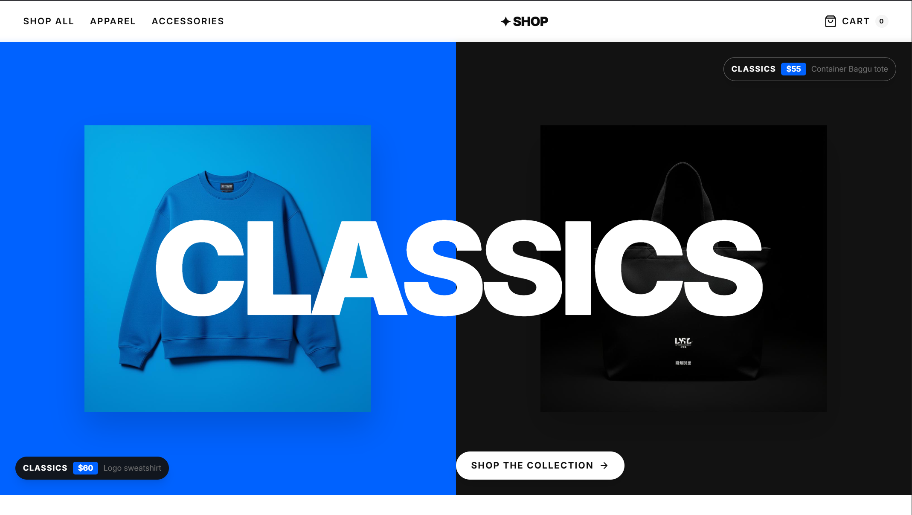
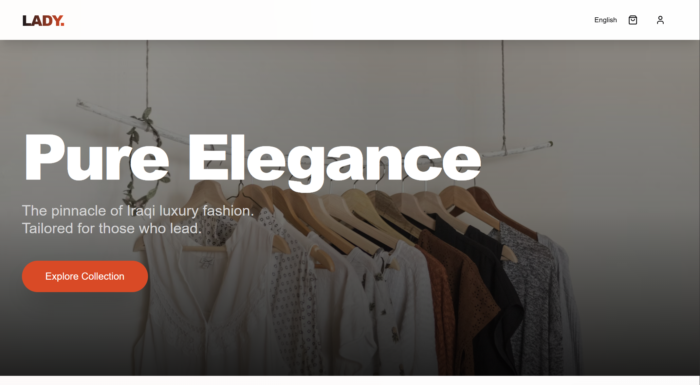
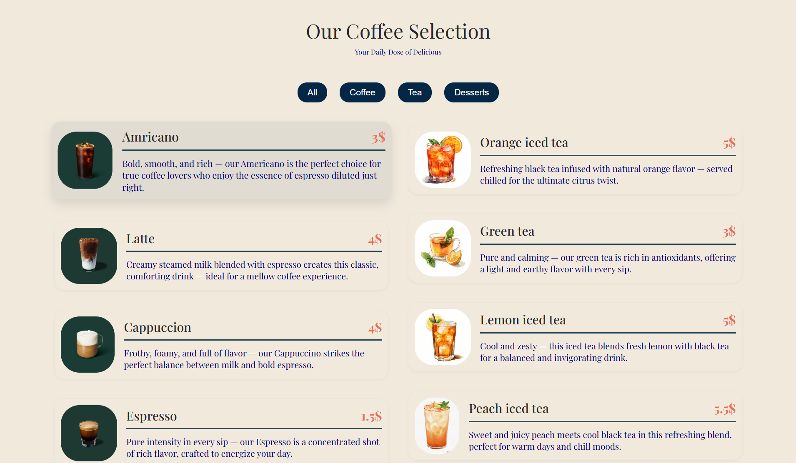
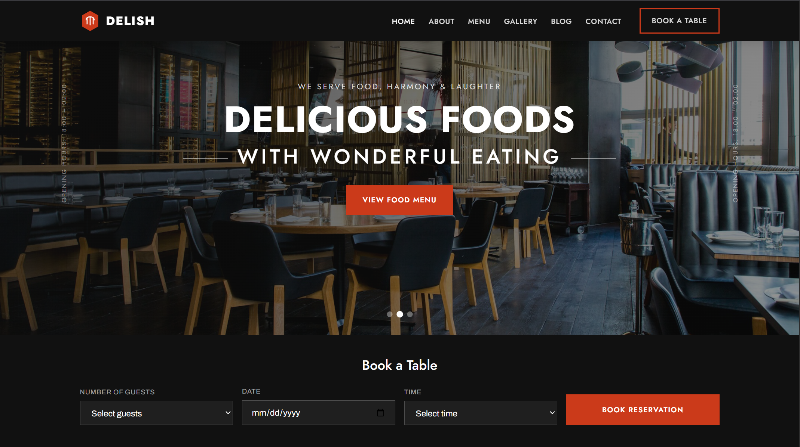
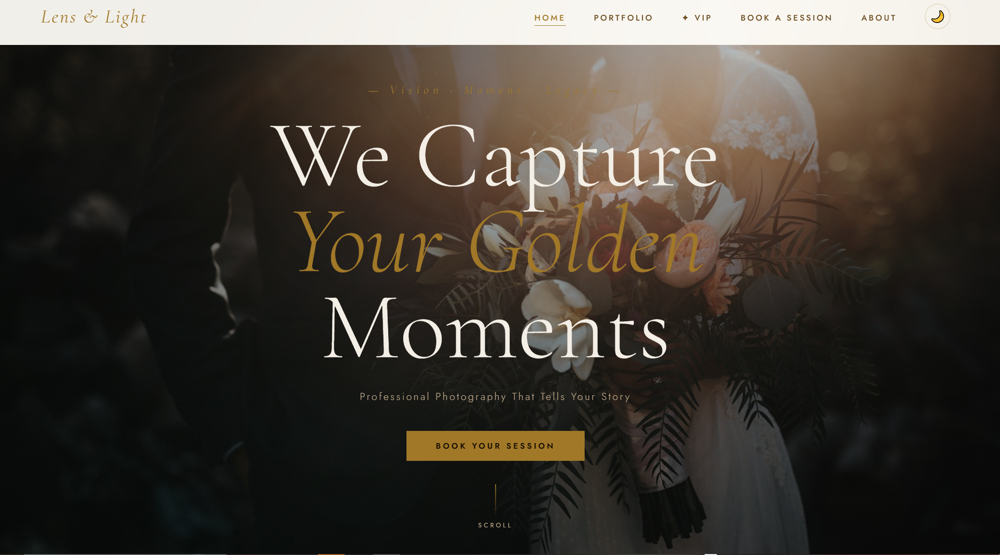
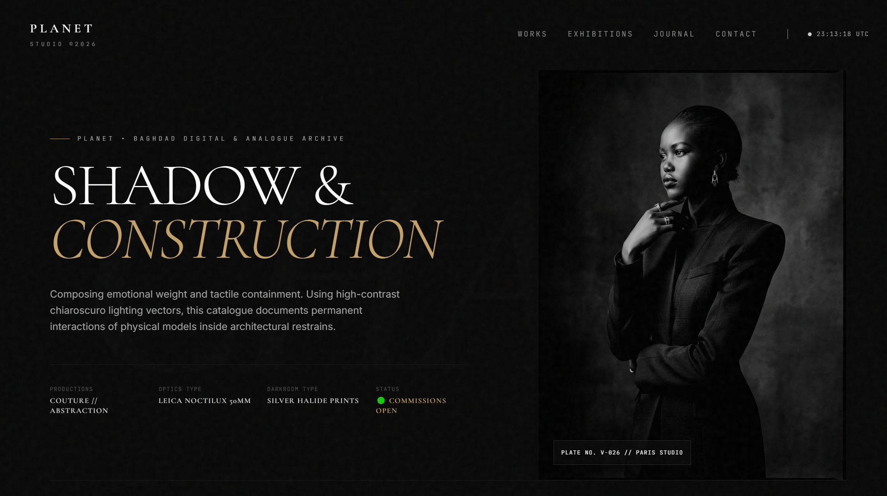
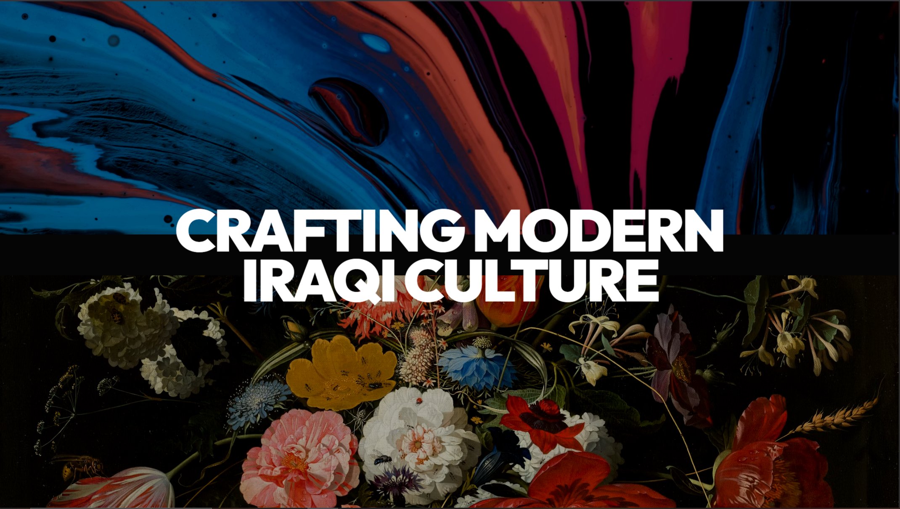
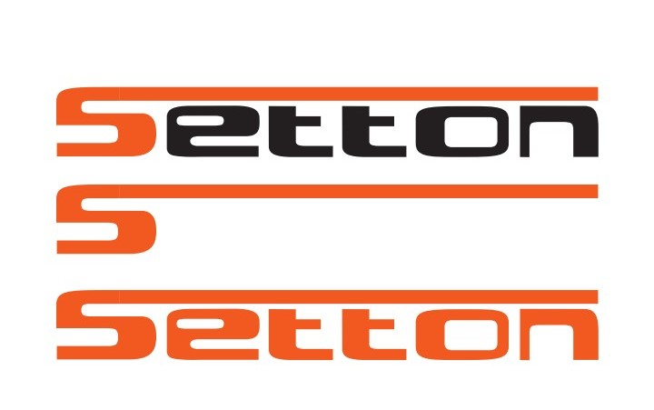
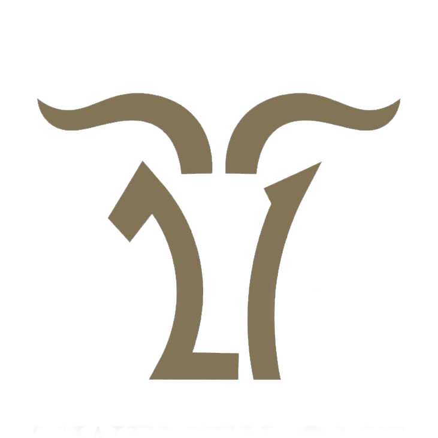

01. Execution
Proprietary high-performance processing layer optimized for sub-millisecond latency and continuous operational flow.
Initializing Systems...
Proprietary high-performance processing layer optimized for sub-millisecond latency and continuous operational flow.
Immutable zero-trust architecture with end-to-end hardware-level encryption. Security is not a feature; it is the default.
Global infrastructure mesh across multiple high-availability zones. Redundant operational integrity by design.

A professional and elegantly designed online store that provides a seamless user experience.
Access Specs
A professional and elegantly designed online store. The pinnacle of Iraqi luxury fashion. Tailored for those who lead.
Access Specs

The restaurant's website is user-friendly, with an integrated on-site booking system, menu, and services.
Access Specs
A website for a photographer to showcase their work, and photo sessions can be booked through the site.
Access Specs
(Editorial Photography Portfolio) is called the PLANET digital and analog archive in Baghdad. The site showcases a unique visual philosophy.
Access Specs
A multidisciplinary design studio based in Baghdad. We partner with visionaries to elevate the visual landscape of Iraq.
Access Specs
The platform is a space where we open doors for content creators to contribute to creating a conscious childhood.
Access Specs
The website features a coffee shop menu, account creation, and online ordering, alongside a product store.
Access SpecsEncrypted communication mesh for distributed field operations. Signal integrity in contested environments.
Audit Flow"Our core system completely improved the performance. Now we run the hardest code with total stability and secure databases everywhere"

"The connection between the website design and the backend is very smooth. The website is fast and works perfectly even under heavy load."

"User experience became 4 times better, while keeping a clean and modern design across all screens"

"The app became 4 times faster with smooth animations, while keeping the fast performance and easy navigation on all phones"